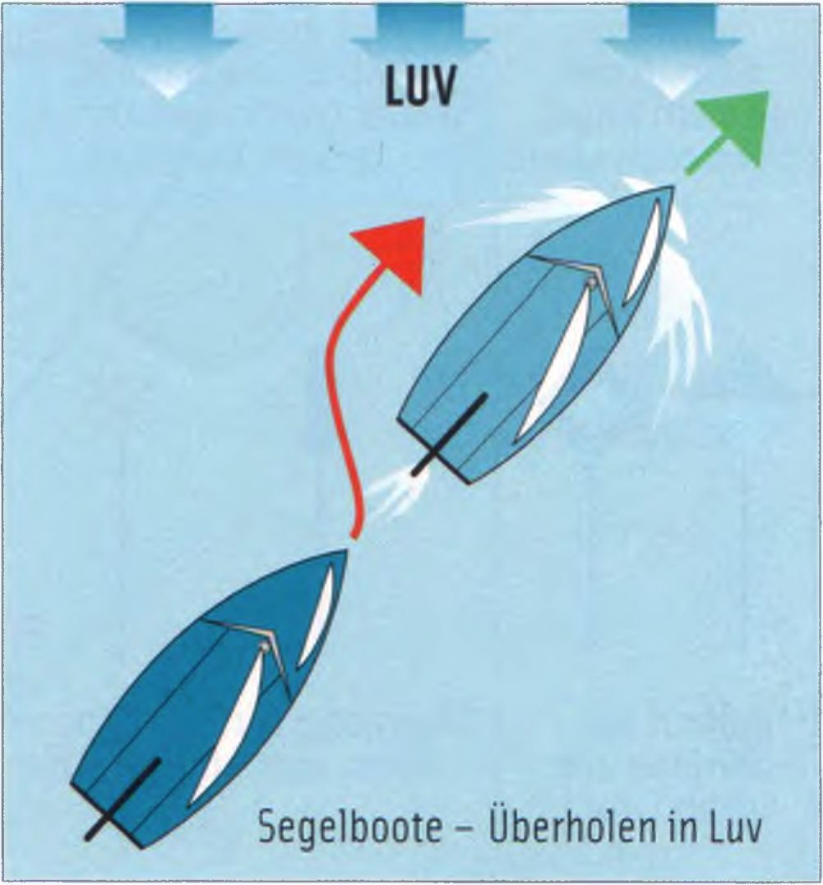

Обгон разрешён только тогда, когда фарватер с учётом местных условий и остального движения предоставляет достаточно места для безопасного прохода.
► Обгоняющий всегда обязан уступить дорогу, даже в редком случае, когда парусная лодка обгоняет моторную.
► Парусная лодка всегда обгоняет с наветренной стороны (Luv), чтобы выполнить манёвр как можно быстрее.
